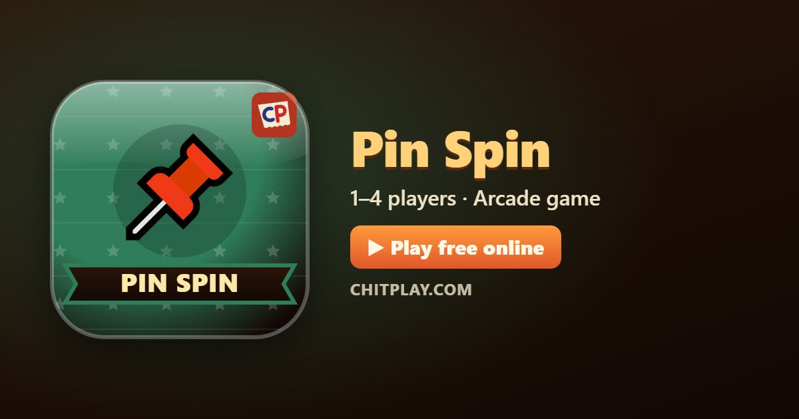

Pin Spin: play free online and learn the rules
- 👥 1–4 players
- ⏱ 1–5 minutes
- 👤 guest play
- 🌍 online opponents
- 🤖 computer players
- 📶 friends nearby
- 🆓 free, no sign-up
Pin Spin is a game of timing, played on a classroom wall. A round corkboard spins in front of you, and every push pin you send has to land in a free spot between the pins already in it. Use up all the pins of a level and the board is full: the next one spins faster, changes direction or already has pins in the way. Every fifth level is a big red board that spins in fits and starts.

Ways to play Pin Spin
- 👤 Guest play Start straight away, no account and no sign-up. Your best score is kept on your device.
- 🌍 Play online Get matched with real players from around the world. If nobody is free within a few seconds, computer players take the empty seats so you are never left waiting.
- 📶 Friends nearby Open a room, and friends join from their own phones with a 6-digit code or by scanning a QR code. Works on the same Wi-Fi or across the internet.
- 🎮 Two on one screen Sit side by side: one player on W A S D, the other on the arrow keys, or a gamepad each.
- 👀 Watch Let the computer players show you how the game goes before you jump in.
How to play
- Tap the screen, press the Pin button, Space or Enter, or a gamepad button to send a pin. It always flies straight up into the bottom of the board.
- Wait for a gap: if your pin touches one already in the board, the run is over.
- Use all the pins shown at the bottom of the screen to finish the level.
- Pin a gold star sticker for 5 bonus points.
- Every fifth level is a big board: it changes speed and direction.
- Each level has a time limit (the thin bar at the bottom): use all its pins before it runs out.
Scoring
Each pin that sticks scores 1, each star 5, and finishing a level scores twice the level number. Medals at 25, 60, 120 and 250 points.
Who wins
Alone, beat your own best. With others, everyone pins their own board at the same time and the highest score wins.
Tips
- Send a pin just after another one passes the bottom, not just before the next one arrives.
- On boards that change direction, wait for the change before you tap.
- Stars are worth a risk early in a level, not when the board is nearly full.
Questions
Does it ever end?
No: the levels keep coming, and you play until a pin touches another.
Can friends play together?
Yes, up to four, each with their own board, on one screen, nearby or online.
Is it safe for every age?
Yes. It is a timing game with push pins and a corkboard: nothing sharp is thrown at anyone, and points have no value.
How do you play Pin Spin online with friends?
Open Pin Spin on ChitPlay and choose Nearby Play. One phone opens a room and gets a 6-digit code; your friends type the code or scan the QR code on their own phones and join. No sign-up is needed.
Can I play Pin Spin without downloading anything?
Yes. Pin Spin runs in the web browser on phones, tablets and computers. Open www.chitplay.com, pick Pin Spin and play as a guest.
How many players can play Pin Spin?
Pin Spin on ChitPlay is for 1 to 4 players. You can play alone, or with friends and family.
Is Pin Spin free to play?
Yes, Pin Spin is completely free on ChitPlay. There is no real money, betting or prizes, and points have no value outside the game.
Can I play Pin Spin against the computer?
Yes. You can play Pin Spin on your own and try to beat your best score, or race against computer players.
More games
- Flying Chit
- Tunnel Race
- Hoop Flick
- Ghost Hostel
- Ship Fight
- Bull Fight
- Road Dash
- Backyard Rally
- Hungry Snake
- Cops and Robbers (Raja Rani Chor Police)
- All games
Points in this game have no value. ChitPlay involves no real money, betting or prizes.